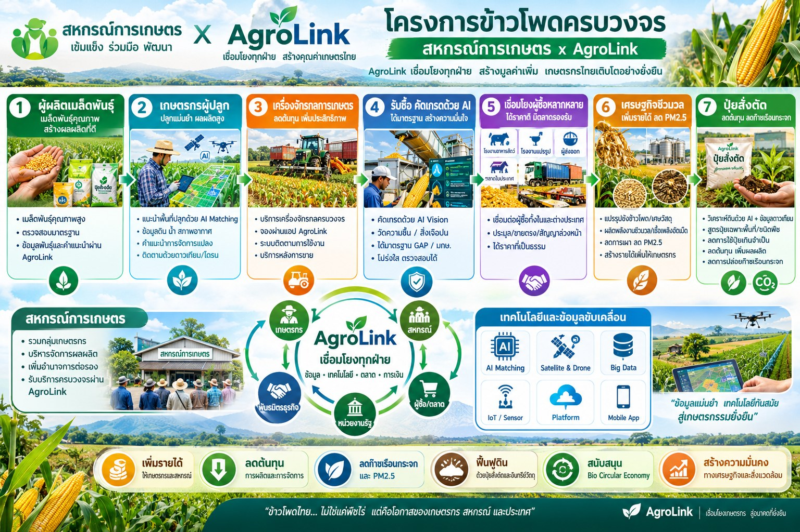

"ไม่เผาแล้วได้มากกว่า" — เชื่อมเกษตรกรกับสินเชื่อเป็นงวด ปุ๋ยสั่งตัด ดาวเทียมติดตามแปลง และตลาดข้าวโพดปลอดการเผาทั้งในและข้ามพรมแดน
ฉบับร่างเพื่อพิจารณา — บริษัท ภักดี คอร์ปอเรชั่น จำกัด (AgroLink)
ไทยผลิตข้าวโพดเลี้ยงสัตว์ได้ราว 4–5 ล้านตันต่อปี แต่มีความต้องการใช้ราว 9 ล้านตัน จึงขาดแคลนปีละ 3–4 ล้านตันและต้องนำเข้าจากประเทศเพื่อนบ้าน ขณะเดียวกัน ตั้งแต่ 1 มกราคม 2569 ข้าวโพดนำเข้าทุกประเทศต้องมาจากแหล่งผลิตที่ “ปลอดการเผา” โดยผู้นำเข้าต้องแสดงหนังสือรับรองตนเองที่ระบุที่ตั้งแปลงปลูกและเก็บหลักฐานไว้ 5 ปีเพื่อตรวจสอบย้อนกลับ แต่ยังขาดเครื่องมือกลางที่ยืนยันข้อมูลแปลงได้จริง
ปัญหาเชิงโครงสร้างที่โครงการมุ่งแก้มี 5 ด้าน:
โครงการจึงเสนอใช้ Agrolink เป็นโครงสร้างพื้นฐานดิจิทัล (Digital Infrastructure) ที่เชื่อมข้อมูลแปลง การเงิน ปัจจัยการผลิต การค้า และการตรวจสอบการเผา เข้าเป็นระบบเดียว ทั้งในประเทศและข้ามพรมแดน
โครงการลดต้นทุนจาก 2 รายการใหญ่ที่สุดที่เกษตรกรควบคุมได้: ดอกเบี้ยเงินทุนหมุนเวียน และค่าปุ๋ย โดยใช้ข้อมูลแปลงจากดาวเทียมเป็นตัวเชื่อมระหว่างสองระบบ
แทนการปล่อยเงินกู้ก้อนเดียวตั้งแต่ต้นฤดู สถาบันการเงินหรือสหกรณ์อนุมัติวงเงินทั้งฤดู แต่เบิกจ่ายจริงเป็นงวดตามความต้องการใช้เงินของแต่ละช่วง ดอกเบี้ยคิดเฉพาะยอดที่เบิกแล้วและตามจำนวนวันที่ใช้จริง
| งวด | ระยะของพืช | ใช้เงินเพื่อ | เงื่อนไขปลดงวด (ยืนยันผ่านระบบ) |
|---|---|---|---|
| 1 | เตรียมดิน–ปลูก | ไถเตรียมดิน เมล็ดพันธุ์ ปุ๋ยรองพื้นสั่งตัด | ผลวิเคราะห์ดิน + ภาพดาวเทียมยืนยันการเตรียมแปลง |
| 2 | ต้นอ่อน–เจริญเติบโต (ประมาณ 20–45 วัน) | ปุ๋ยแต่งหน้า สารป้องกันศัตรูพืช โดรนพ่น | ดัชนีพืชพรรณ (NDVI) ยืนยันการงอกและการเจริญเติบโต |
| 3 | ออกดอก–ติดฝัก | ปุ๋ยเสริมตามดัชนีพืช ค่าแรง | NDVI และการประเมินผลผลิตเบื้องต้น |
| 4 | เก็บเกี่ยว–ขาย | รถเกี่ยว รถขนส่ง | คิวรถเกี่ยวและคิวขายในระบบ; หักชำระคืนอัตโนมัติ ณ จุดขาย |
กลไกนี้ลดต้นทุนได้ 3 ทาง:
เกษตรกรได้รับการวิเคราะห์ดิน (N-P-K, pH, อินทรียวัตถุ) ผ่านสหกรณ์หรือหน่วยตรวจดินเคลื่อนที่ ระบบออกสูตรปุ๋ยเฉพาะแปลงและปริมาณที่ต้องใช้ตามเป้าผลผลิต แล้วสั่งผสมผ่านสหกรณ์หรือโรงงานปุ๋ยผสมในเครือข่าย
ตัวเลขการลดต้นทุนปุ๋ยจริงจะวัดจากแปลงนำร่องเทียบกับแปลงควบคุม (ดูตัวชี้วัดในหัวข้อ 7)
ดาวเทียมคือแหล่งข้อมูลกลางที่ทุกโมดูลใช้ร่วมกัน: ปลดงวดเงินกู้ กำหนดปุ๋ย ประเมินผลผลิต และยืนยันการไม่เผา โดยไม่ต้องลงพื้นที่ทุกแปลง ซึ่งสำคัญมากสำหรับแปลงในประเทศเพื่อนบ้านที่เข้าตรวจได้ยาก
| กิจกรรม | ข้อมูลที่ใช้ | นำไปใช้กับ |
|---|---|---|
| ขอบเขตและพื้นที่แปลง | ภาพถ่ายดาวเทียมความละเอียดสูง + พิกัด GPS ที่เกษตรกร/สหกรณ์ลงทะเบียน | ทะเบียนแปลง, หนังสือรับรองแหล่งผลิต |
| การเตรียมดินและวันปลูก | ภาพหลายช่วงเวลา (Optical + Radar ซึ่งมองทะลุเมฆได้ในฤดูฝน) | ปลดเงินงวด 1, ปฏิทินการผลิต |
| การเจริญเติบโตและสุขภาพพืช | ดัชนีพืชพรรณ (NDVI) รายสัปดาห์ | ปลดเงินงวด 2–3, ปุ๋ยแต่งหน้า |
| การประเมินผลผลิต | แบบจำลองผลผลิตจากดัชนีพืช + ข้อมูลอากาศ | วางแผนรับซื้อของไซโล/โรงงาน, วงเงินสินเชื่อ |
| การเก็บเกี่ยวและการจัดการตอซัง | การเปลี่ยนแปลงของแปลงหลังเก็บเกี่ยว | Incentive ไม่เผา, การรวบรวมชีวมวล |
| จุดความร้อนและรอยเผา | Hotspot (เช่น VIIRS/MODIS) + ดัชนีรอยไหม้ (Burn Scar) | ยืนยันสถานะปลอดการเผาของแปลง |
เกษตรกรลงทะเบียนแปลงผ่านสหกรณ์หรือแอป Agrolink ข้อมูลเชื่อมกับทะเบียนเกษตรกรของกรมส่งเสริมการเกษตร และใช้ข้อมูลจุดความร้อนร่วมกับ GISTDA เพื่อให้ภาครัฐเห็นภาพรวมการผลิตและความเสี่ยงการเผารายอำเภอ
ระบบเดียวกันขยายไปยังแปลงปลูกข้าวโพดในเมียนมา สปป.ลาว และกัมพูชาที่ส่งผลผลิตเข้าไทย:
ผลคือมาตรการปลอดการเผาเปลี่ยนจากการรับรองตนเองที่ตรวจสอบได้ยาก เป็นการรับรองที่มีข้อมูลดาวเทียมรายแปลงรองรับ
แพลตฟอร์มจับคู่เกษตรกรและสหกรณ์กับผู้ให้บริการรถไถ โดรนพ่น รถเกี่ยว และเครื่องอัดฟาง/เครื่องสับตอซัง โดยใช้ปฏิทินการผลิตจากดาวเทียมจัดคิวล่วงหน้าตามเส้นทาง ช่วยเพิ่มอัตราการใช้เครื่องจักรและลดค่าบริการต่อไร่ ค่าบริการจ่ายจากเงินกู้งวดที่เกี่ยวข้องได้โดยตรง
โครงการขยายตลาดเดียวกันไปยังการนำเข้า เพื่อให้ไทยได้วัตถุดิบที่ขาดแคลนจากแหล่งที่ตรวจสอบได้ และไม่กระทบเกษตรกรไทยในฤดูผลิตหลัก
โครงการนำร่องควรเริ่มที่ด่านหลัก 1–2 แห่งต่อประเทศ โดยด่านที่เหมาะสมต้องหารือกับกรมการค้าต่างประเทศและผู้ประกอบการในพื้นที่
หลักการคือทำให้ “ไม่เผา” ได้เงินมากกว่าและต้นทุนต่ำกว่า “เผา” โดยรวมแรงจูงใจหลายชั้นเข้าด้วยกัน และใช้ดาวเทียมยืนยันสถานะรายแปลงอัตโนมัติ ทั้งแปลงในประเทศและแปลงต่างประเทศที่ลงทะเบียน
| ชั้น | แรงจูงใจ | ผู้จ่าย/ผู้ให้ | เงื่อนไข |
|---|---|---|---|
| 1. ราคา | ราคาพิเศษ (Green Premium) ต่อกิโลกรัม สำหรับข้าวโพดจากแปลงปลอดการเผา | โรงงานอาหารสัตว์ ผู้ส่งออกเนื้อสัตว์ที่ต้องการวัตถุดิบยั่งยืน | ไม่พบจุดความร้อน/รอยเผาในแปลงตลอดรอบการผลิต |
| 2. สินเชื่อ | ส่วนลดดอกเบี้ยหรือเพิ่มวงเงินในฤดูถัดไป | สถาบันการเงิน สหกรณ์ | ประวัติปลอดการเผาต่อเนื่อง |
| 3. ชีวมวล | รายได้จากการขายต้นและซังข้าวโพดเป็นวัตถุดิบ Biochar / Biomass Pellets | โรงไฟฟ้าชีวมวล โรงงานแปรรูป | ส่งมอบชีวมวลผ่านจุดรวบรวมในระบบ |
| 4. บริการ | ค่าบริการเครื่องอัดฟาง/สับกลบตอซังราคาพิเศษ หรือไม่มีค่าใช้จ่าย | กองทุนโครงการ ผู้ซื้อชีวมวล | จองคิวผ่าน AI Matching |
| 5. คาร์บอน | ส่วนแบ่งรายได้คาร์บอนเครดิตจากการลดการเผาและการฝัง Biochar | ผู้ซื้อคาร์บอนเครดิต (ผ่านกลไก T-VER) | ข้อมูลแปลงและการตรวจวัดที่ทวนสอบได้ |
แรงจูงใจต้องมีแหล่งเงินที่ยั่งยืน ไม่พึ่งงบอุดหนุนอย่างเดียว เสนอให้มาจาก (1) ส่วนต่างราคาที่โรงงานอาหารสัตว์และผู้ส่งออกยินดีจ่ายเพื่อลดความเสี่ยงด้านมาตรการนำเข้าและข้อกำหนดตลาดปลายทาง (2) รายได้ชีวมวลและคาร์บอนเครดิต และ (3) กองทุนหรืองบประมาณภาครัฐในช่วงเริ่มต้นสำหรับพื้นที่เสี่ยงสูง
แปลงต่างประเทศที่ลงทะเบียนและผ่านการตรวจปลอดการเผาได้รับแรงจูงใจชั้นที่ 1 ผ่านราคารับซื้อของผู้นำเข้าไทย ทำให้การแก้หมอกควันข้ามแดนใช้กลไกตลาดแทนการบังคับเพียงอย่างเดียว และสอดคล้องกับข้อเสนอของประเทศคู่ค้าให้หารือมาตรการในกรอบอาเซียนและมีช่วงปรับตัว
ค่าเป้าหมายจะกำหนดร่วมกับหน่วยงานหลังได้ข้อมูลฐาน (Baseline) ของพื้นที่นำร่อง
| ด้าน | ตัวชี้วัด |
|---|---|
| ต้นทุน | ดอกเบี้ยจ่ายต่อไร่ เทียบสินเชื่อก้อนเดียว; ปริมาณและค่าปุ๋ยต่อไร่ เทียบแปลงควบคุม |
| ผลผลิต | ผลผลิตต่อไร่ และรายได้สุทธิต่อไร่ |
| การเผา | จำนวนจุดความร้อนและพื้นที่รอยเผาในพื้นที่โครงการ เทียบปีฐาน |
| ชีวมวล | ตันชีวมวลที่รวบรวมได้ และรายได้เสริมต่อครัวเรือน |
| การค้า | สัดส่วนผลผลิตที่ซื้อขายผ่านระบบพร้อมผลตรวจคุณภาพ; ปริมาณนำเข้าที่ตรวจสอบย้อนกลับถึงแปลงได้ |
| การเงิน | อัตราหนี้เสียของสินเชื่อในโครงการ |
กระทรวงเกษตรและสหกรณ์ (กรมส่งเสริมการเกษตร กรมพัฒนาที่ดิน กรมส่งเสริมสหกรณ์) กระทรวงพาณิชย์ (กรมการค้าต่างประเทศ) GISTDA ธ.ก.ส. องค์การบริหารจัดการก๊าซเรือนกระจก (อบก.) สมาคมผู้ผลิตอาหารสัตว์ไทย และสหกรณ์การเกษตรในพื้นที่
ไม่ว่าจะในฐานะเกษตรกร สหกรณ์ ลานพืชไร่ ไซโล โรงงานอาหารสัตว์ หรือพันธมิตรทางธุรกิจ ติดต่อทีมงาน AgroLink เพื่อขอข้อมูลเพิ่มเติมได้ทันที